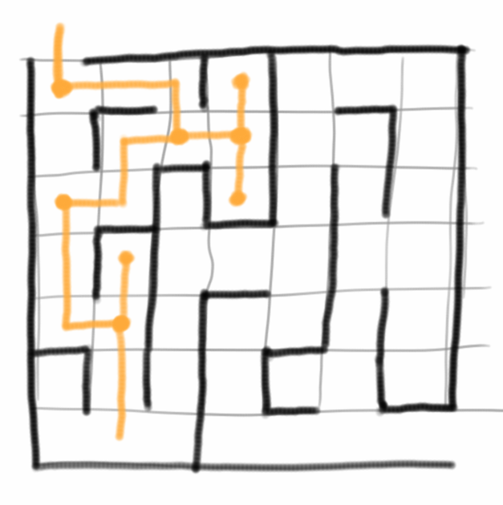
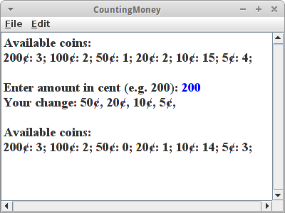
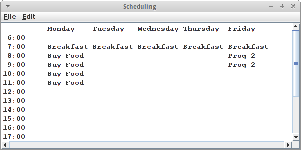
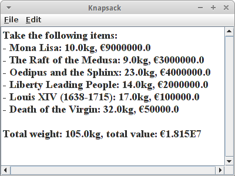
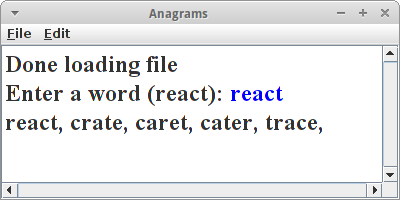
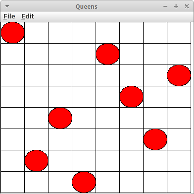
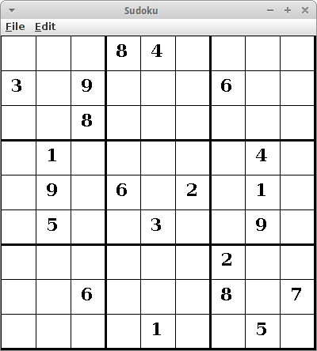

Techniques
Wir haben bisher schon einige algorithmische Techniken gesehen und uns ausführlich mit ihnen beschäftigt, als da waren die Iteration, die Rekursion, der Divide and Conquer Algorithmus und die Dynamische Programmierung. Diese Techniken sind sozusagen unsere Basics, die brauchen wir immer. Darüber hinaus gibt es aber noch andere Klassen von Algorithmen, die sich als sehr hilfreich herausgestellt haben. Meist arbeiten diese mit den anderen zusammen, sind also nicht unabhängig von ihnen.
Eine Methode die im Prinzip immer funktioniert ist Brute Force, d.h., einfach alle Möglichkeiten ausprobieren. Das Problem mit Brute Force ist wenn es viele Möglichkeiten gibt. Dann kann das Ausprobieren nämlich sehr lange dauern. Es gibt aber glücklicherweise auch noch andere Verfahren, als da sind Greedy Algorithmen, Back Tracking Algorithmen und Randomized Algorithmen. Natürlich gibt es auch noch andere, wir beschränken uns aber auf diese. Diese Algorithmen funktionieren nicht immer, und sie finden nicht notwendigerweise die beste Lösung, aber sehr häufig finden sie akzeptable Lösungen, und das genügt meistens.
.
Greedy Algorithms
Greedy Algorithmen, auch gierige Algorithmen genannt, sind Algorithmen die bei jedem möglichen Schritt immer die gerade am besten erscheinende Alternative wählen. Ein ganz einfaches Beispiel ist der Selection Sort: der sagt einfach "suche nach der kleinsten Zahl und setze sie an den Anfang". Die Greediness besteht hier darin die kleinste Zahl zu nehmen. Greediness bedeutet es muss irgendein Auswahl- oder Bewertungkriterium geben. Zwei andere Beispiele für Greedy Algorithmen die wir schon gesehen haben sind der Dijkstra, der Prim und der Kruskal Algorithmus. Das sind Beispiele wo der Greedy Algorithmus immer eine Lösung liefert. Das muss aber nicht immer so sein.
Andere Beispiele die sich mit einem Greedy Algorithmus lösen lassen sind:
- Rucksackproblem [3]
- Problem des Handlungsreisenden
- Huffman coding [1]
- Greedy coloring [2]
- Tic-Tac-Toe [3]
- Graph Layout
- Optimales Kommunikationsnetz [3]
Wir wollen uns die Technik etwas genauer anhand von ein paar Beispielen ansehen.
.
CountingMoney
Für einen automatischen Kaffeeautomaten wollen wir einen Algorithmus entwickeln, der das richtige Rückgeld berechnet. Unser Automat ist gefüllt mit einer bestimmten Anzahl von verschiedenen Euro und Cent Münzen. Wir nehmen einfach mal an, unser Automat hätte vier 5-Cent-Münzen, fünf 10-Cent-Münzen, zwei 20-Cent-Münzen, eine 50-Cent-Münze, zwei 1-Euro-Münzen und drei 2-Euro-Münzen. Ein Kaffee soll 1,15 Euro kosten. Wenn jetzt ein Kaffeesüchtiger eine 2-Euro-Münze einwirft, dann soll unser Algorithmus das richtige Wechselgeld liefern, also je eine 50-Cent, 20-Cent, 10-Cent- und 5-Cent Münze.
Brute-Force
Ein möglicher Algorithmus wäre ein Brute Force Algorithmus [14]: der probiert einfach alle möglichen Münzkombinationen aus, bis 85 Cent rauskommt. Wieiviele Möglichkeiten gibt es? Wenn wir 17 Münzen haben (wie im Beispiel oben), also
Coins = { 5, 5, 5, 5, 10, 10, 10, 10, 10, 20, 20, 50, 100, 100, 200, 200, 200 }
dann gibt es 2n, also 217 oder 131072 mögliche Kombinationen. Wenn unser Computer für die Berechnung einer Kombination eine Millisekunde benötigen würde, dann müssten wir ungefähr zwei Minuten warten bis wir unser Wechselgeld bekommen würden. Hätten wir aber z.B. 30 Münzen in unserem Automaten, dann müssten wir 12 Tage auf unser Wechselgeld warten, der Kaffee wäre dann schon kalt! Also das taugt nicht.
Greedy
Die greedy Version des Algorithmus, macht eigentlich genau das, was wir normalerweise auch machen würden, wenn wir Geld zurückgeben sollen: wir suchen nach der größten Münze. Also wenn wir 85 Cent zurückgeben sollen, dann würden mit der 50 Cent Münze anfangen, und nicht mit den 5 Cent Münzen. Danach würden wir die 20 Cent, dann die 10 und schließlich die 5 Cent Münze nehmen, also
50¢, 20¢, 10¢, 5¢
Der Greedy Algorithmus für die Münzrückgabe funktioniert demnach wie folgt:
- nimm die größte Münze die Du hast;
- subtrahiere sie vom Rückgeld;
-
solange der Betrag größer gleich null ist
- gib die Münze aus und
- ziehe den Wert vom Rückgeld ab und gehe zurück zu 2.
- wenn der Betrag kleiner als null ist, dann gehe zur nächst kleineren Münze und gehe zurück zu 2.
Bevor wir das in Code umsetzen, ein paar Fragen: Funktioniert der Algorithmus immer? Gibt der Algorithmus immer die geringste Anzahl von Münzen zurück? Was passiert wenn nicht genug Münzen im Automaten sind?
Wir werden zwei Versionen vorstellen wie man den Algorithmus umsetzen kann. Die erste verwendet Arrays, was wir ja eigentlich nicht tun sollen, aber didaktisch ist es damit viel einfacher zu verstehen. Wir haben ein Array mit den Münzwerten, also 200 steht für den Wert einer zwei Euro Münze, usw.:
private int[] coinValues = { 200, 100, 50, 20, 10, 5 };
und dann haben wir noch ein Array für die Anzahl der jeweiligen Münzen,
private int[] coinNumbers = { 3, 2, 1, 2, 15, 4 };
also wir haben 3 von den zwei Euro Münzen, usw. Ganz wichtig ist hier die Reihenfolgen, also einmal dass das erste Element in beiden Arrays sich auf die zwei Euro Münze bezieht. Und die Reihenfolge ist auch wichtig für die Greediness: wir wollen ja bei der Rückgabe immer mit der größten Münze beginnen, deswegen sind die Münzen sortiert in absteigender Reihenfolge. Wenn wir die Reihenfolge ändern würden, wäre der Algorithmus nicht mehr greedy.
Mit diesen Voraussetzungen ist der eigentliche Algorithmus recht überschaubar:
private void giveChange(int amount) {
for (int i = 0; i < coinValues.length; i++) {
while ((coinNumbers[i] > 0) && ((amount - coinValues[i]) >= 0)) {
amount = amount - coinValues[i];
coinNumbers[i]--;
print(coinValues[i] + "¢, ");
}
}
}
Kommen wir zur zweiten Version: hier verwenden wir anstelle zweier Arrays eine TreeMap:
private TreeMap<Integer, Integer> coins;
Tree deswegen weil wir möchten, dass die Münzen der Größe nach sortiert sind. Der Key in der Map ist der Münzwert, und der Value ist die Anzahl der Münzen. Wir befüllen unsere Kaffeemaschine mit Geld in der initMap() Methode:
private void initMap() {
// this is a dirty trick, to reverse the order the treemap is traversed:
coins = new TreeMap<Integer, Integer>(Collections.reverseOrder());
coins.put(5, 4); // four 5-cent coins
coins.put(10, 15); // fifteen 10-cent coins,
coins.put(20, 2); // two 20-cent coins,
coins.put(50, 1); // one 50-cent coin,
coins.put(100, 2); // two 1-euro coins,
coins.put(200, 3); // three 2-euro coins
}
wobei wir der TreeMap explizit sagen müssen, dass die Münzen absteigend und nicht aufsteigend sortiert werden sollen.
Auch hier ist dann der eigentliche Algorithmus sehr überschaubar:
private void giveChange(int amount) {
for (int coin : coins.keySet()) {
int nrOfCoins = coins.get(coin);
while ((nrOfCoins > 0) && ((amount - coin) >= 0)) {
amount = amount - coin;
nrOfCoins--;
print(coin + "¢, ");
}
coins.put(coin, nrOfCoins);
}
}
Soviel zum Kaffeeautomaten.
.
Scheduling
Wir wollen einen Greedy Algorithmus entwickeln der unseren Terminkalender organisiert. Dabei beschränken wir uns auf eine Woche. Die Woche unterteilen wir in Zeitschlitze, z.B. jeweils einstündige. Der Tag beginnt im 6 Uhr morgens und endet um 24 Uhr.
Als Erstes generieren wir eine Liste von Tasks, also Aufgaben, die wir erledigen müssen:
- Frühstück, dauert 1h, hohe Priorität, jeden Tag, um 7:00 Uhr;
- Programmieren 2 Vorlesung, dauert 2h, mittlere Priorität, Fretag, um 8:00 Uhr;
- Party, dauert 4h, niedrige Priorität, beliebiger Tag, beliebige Uhrzeit.
Der zweite Schritt ist dann diese Aufgabenliste zu nehmen und auf die Woche so zu verteilen, dass es möglichst keine Konflikte gibt.
Auch hier könnte man wieder einen Brute Force Ansatz wählen, aber ohne ins Detail zu gehen, dürfte schnell klar sein, dass wir auch hier wieder sehr lange auf unsere Antwort warten müssten.
Für den Greedy Ansatz benötigen wir wieder irgendein Auswahl- oder Bewertungkriterium mit dem wir Prioritäten setzen können, und natürlich bieten sich die Prioritäten (also Frühstück hohe Priorität) dafür an.
Wir beginnen damit, dass wir aus unseren Tasks erst einmal eine Klasse machen:
private class Task implements Comparable { protected String name; // name of task, eg "breakfast", "prog2", ... protected int duration; // in hours protected int priority; // 0 is high, 1 is medium, 2 is low protected String day; // "EveryDay", "Friday", "AnyDay" protected int time; // 7 for 7:00 am or 13 for 1pm or -1 for anytime public Task(String name, int duration, int priority, String day, int time) { super(); ... } public int compareTo(Object o) { if (o instanceof Task) { return this.priority - ((Task) o).priority; } return 0; } }
Die Klasse hat also die gewünschten Attribute. Aus den Prioritäten haben wir Zahlen gemacht. Es stört vielleicht, dass die Attribute protected sind, da die Klasse aber private ist, und es sich um eine lokale Klasse handelt ist das nicht so schlimm. Wir können mal ein paar Tasks anlegen:
new Task("Buy Food", 4, 2, "AnyDay", -1);
new Task("Breakfast", 1, 0, "EveryDay", 7);
new Task("Prog 2", 2, 1, "Friday", 8);
Kommen wir zum Comparable Interface: wir wollen zwei Tasks vergleichen können, und zwar über ihre Prioritäten. Das machen wir in der compareTo() Methode: die gibt Null (also 0) zurück wenn die beiden Tasks gleiche Priorität haben, eine positive Zahl falls unsere Priorität höher ist, und andernfalls eine negative Zahl.
Dieses Interface benötigen wir, weil wir mit einer PriorityQueue arbeiten wollen, und zwar einer PriorityQueue von Tasks:
private PriorityQueue<Task> tasks = new PriorityQueue<Task>();
Eine PriorityQueue ist wie eine Queue, also first-in-first-out, aber zusätzlich berücksichtigt sie noch die Prioritäten, d.h. kommt ein zusätzlicher Task, der aber eine höhere Priorität hat, dann kommt der an den Anfang der Queue. Ist so ein bischen wie mit den Sanitätern. Wir befüllen dann einfach unsere Queue mit den Tasks:
tasks.add(new Task("Buy Food", 4, 2, "AnyDay", -1));
tasks.add(new Task("Breakfast", 1, 0, "EveryDay", 7));
tasks.add(new Task("Prog 2", 2, 1, "Friday", 8));
Die Greediness kommt in diesem Beispiel also zum Einen über die Priorität, aber zum Anderen auch über die Reihenfolge mit der wie die Tasks in die Queue einfügen. Das Hinzufügen geschieht in zwei Schritten. Erst einmal gehen wir alle Tasks durch:
Task task;
while ((task = tasks.poll()) != null) {
if (task.day.contains("EveryDay")) {
for (int i = 0; i < weekdays.length; i++) {
addToCalendar(i, task);
}
} else if (task.day.contains("AnyDay")) {
addToCalendar(task);
} else {
for (int i = 0; i < weekdays.length; i++) {
if (task.day.contains(weekdays[i])) {
addToCalendar(i, task);
}
}
}
}
und versuchen für jeden einen Platz im Kalendar zu finden. Die normale addToCalendar() Methode versucht den Task an den vorgegeben Tag und Uhrzeit einzufügen,
private void addToCalendar(int day, Task task) {
if (!insertTaskIntoCal(day, task.time, task)) {
println("Conflict: " + task);
}
}
während die allgemeinere addToCalendar() Methode, die bei AnyDay aufgerufen wird, irgendeinen Zeitschlitz versucht zu finden:
private void addToCalendar(Task task) {
int day = 0;
int hour = 7;
while (!insertTaskIntoCal(day, hour, task)) {
hour++;
if (hour > 23) {
day++;
hour = 7;
if (day > 4) {
System.out.println("Conflict: " + task);
break;
}
}
}
}
Das eigentliche Einfügen passiert in der insertTaskIntoCal() Methode:
private boolean insertTaskIntoCal(int day, int hour, Task task) {
boolean success = true;
// test if insert is possible
for (int i = 0; i < task.duration; i++) {
if (calendar[day][hour + i] != null) {
success = false;
}
}
// do the insert
if (success) {
for (int i = 0; i < task.duration; i++) {
calendar[day][hour + i] = task.name;
}
}
return success;
}
Unser Greedy Algorithmus funktioniert überraschend gut. Allerdings kann er im Gegensatz zum Backtracking Algorithmus einmal getroffene Entscheidungen nicht mehr rückgängig machen. D.h., wenn er sich einmal verrannt hat, dann muss man von Hand nachhelfen.
Das Scheduling Problem gibt es in ganz vielen verschiedenen Varianten, und in Referenz [4] wird die Version des Interval Scheduling sehr anschaulich behandelt.
.
Knapsack
Beim Knapsack Problem, auch Rucksackproblem genannt, geht es darum nach einem gewissem Maximierungskriterium z.B. einen Rucksack zu befüllen. Angenommen unser Meisterdieb (Daniel "Danny" Ocean from Ocean's Eleven) will den Louvre ausrauben. Sein Team kann aber nur 300 kg tragen. Deswegen hat er uns als Computer-Experten geheuert, damit wir ihm sagen was er mitnehmen soll, um seinen Profit zu maximieren.
Danny hat im Internet eine Liste von Kunstwerken gefunden die es im Louvre gibt:
| Artwork | Artist | Type | Weight / kg | Price / euro |
| Venus de Milo | Found in Melos | sculpture | 315 | 20000000 |
| Mona Lisa | Leonardo da Vinci | painting | 10 | 9000000 |
| Liberty Leading the People | Eugene Delacroix | painting | 14 | 2000000 |
| Psyche Revived By the Kiss of Love | Antonio Canova | sculpture | 545 | 5000000 |
| Oedipus and the Sphinx | Jean-Auguste-Dominique Ingres | painting | 23 | 4000000 |
| The Raft of the Medusa | Theodore Gericault | painting | 9 | 3000000 |
| Milon de Crotone | Pierre Puget | sculpture | 332 | 4000000 |
| Louis XIV (1638-1715) | Hyacinthe Rigaud | painting | 17 | 100000 |
| Death of the Virgin | Michelangelo Merisi | painting | 32 | 50000 |
| Cy Twombly's Ceiling | The Louvre's Cy Twombly Ceiling | ceiling | 10000 | 10000 |
(Die Liste der Kunstwerke stammt aus [5], das Gewicht und die Preise sind rein zufällig.)
Brute-Force
Wieder kann dieses Problem durch Brute-Force gelöst werden, d.h. einfach alle möglichen Kombinationen ausprobieren. Das findet mit Sicherheit die beste Lösung. Das Problem ist, dass es 2n mögliche Kombination gibt und damit dieser Ansatz sehr schnell sehr lange dauert.
Greedy
Die zweite Möglichket ist wieder mal einen Greedy Ansatz zu wählen. Wir benötigen natürlich irgendein Auswahl- oder Bewertungkriterium mit dem wir Prioritäten setzen können. Wir haben drei Möglichkeiten:
- wir könnten einfach nach dem Preis, also dem Profit maximieren;
- wir könnten nach dem Gewicht maximieren, also z.B. nur die leichten Sachen mitnehmen;
- oder wir könnten nach der Profit-Density maximieren, also dem Verhältnis Preis zu Gewicht.
Alle drei Ansätze können zu einer anständigen Lösung führen, aber es ist nicht garantiert, dass es wirklich die beste Lösung ist.
Wenn wir das in Code umsetzen wollen, benötigen wir erst wieder eine Klasse um die Kunstwerke zu repräsentieren:
private class Valuable {
protected String name;
protected double weight;
protected double price;
public Valuable(String name, double weight, double price) {
this.name = name;
this.weight = weight;
this.price = price;
}
public String toString() {
return name + ": " + weight + "kg, €" + price + "";
}
}
Für uns relevante Daten sind der Name, das Gewicht und der geschätzte Preis des Kunstwerks. Wie bei CountingMoney2 verwenden wir wieder eine TreeMap als Datenstruktur:
private TreeMap<Double, Valuable> valuables;
die wir in der initMap() Methode initialisieren:
private void initMap() {
// this is a dirty trick, to reverse the order the treemap is traversed:
valuables = new TreeMap<Double, Valuable>(Collections.reverseOrder());
for (int i = 0; i < piecesOfArt.length; i++) {
StringTokenizer st = new StringTokenizer(piecesOfArt[i], ",");
String name = st.nextToken().trim();
double weight = Double.parseDouble(st.nextToken().trim());
double price = Double.parseDouble(st.nextToken().trim());
Valuable valubl = new Valuable(name, weight, price);
valuables.put(price / weight, valubl);
//valuables.put(price, valubl);
}
}
In den letzten zwei Zeilen müssen wir uns für unser Gewinnmaximierungskriterium entscheiden, entweder Profit-Density oder Preis. Das ist dann der Schlüssel für unsere TreeMap, nach dem wird also absteigend sortiert. Das ist unsere Greediness.
Dann haben wir noch das Kriterium, dass wir maximal 300kg tragen können, das wir wie folgt umsetzen:
...
println("Take the following items:");
double weight = 0;
double value = 0;
for (double key : valuables.keySet()) {
Valuable val = valuables.get(key);
if (weight + val.weight <= 300.0) {
weight += val.weight;
value += val.price;
println("- "+val);
}
}
println("\nTotal weight: " + weight + "kg, total value: €"+value);
Wir iterieren also durch unseres TreeMap und fügen alles in unseren Rucksack was noch reinpasst.
Die Resultate sind ganz interessant: wenn wir nach Profit-Density optimieren,
Total weight: 105.0kg, total value: €1.815E7
dann müssen wir zwar mehr tragen, nehmen aber auch mehr Geld mit nach Hause. Denn wenn wir nach dem Preis optimieren,
Total weight: 82.0kg, total value: €1.415E7
dann müssen wir zwar etwas weniger tragen, bekommen aber auch nicht so viel Geld dafür.
.
Backtracking
Probleme die sich entweder in Form von Permutationen oder Subsets ausdrücken lassen, können sehr häufig durch den sogenannten Backtracking Algorithmus gelöst werden (auf deutsch Rücksetzverfahren). Die Idee ist relativ einfach wenn man sie sich am Beispiel eines Labyrinths veranschaulicht: an jeder Kreuzung hat man mehrere Möglichkeiten: man kann nach links, geradeaus oder nach rechts gehen. Beim Backtracking entscheidet man sich dann, z.B. immer erst mal nach links zu gehen. Das macht man so lange bis man entweder am Ziel ist, oder bis es nicht mehr weitergeht. Wenn es nicht mehr weitergeht, dann muss man einen Schritt zurückgehen, denn an der letzten Kreuzung hat man offensichtlich eine falsche Entscheidung getroffen. Man versucht es also mit einer anderen Möglichkeit, z.B. gerade aus. Kommt man da auch nicht weiter, dann kann man es noch rechts versuchen, und geht das auch nicht, dann muss man noch einen Entscheidungpunkt weiter zurückgehen.
Backtracking geht also alle Möglichkeiten durch, gehört somit zu den Brute-Force Algorithmen und kann deshalb u.U. sehr lange dauern, aber wenn es eine Lösung gibt, dann findet Backtracking sie. Backtracking ist ein rekursiver Algorithmus, und wir können die Vorgehensweise grob so zusammenfassen:
- unser Problem muss sich irgendwie als eine Reihe von Entscheidungen darstellen lassen;
- an jedem möglichen Entscheidungpunkt treffen wir eine Entscheidung, am besten immer nach dem gleichen Prinzip (z.B. immer erst mal links gehen), und versuchen so weit zu gehen wie es geht;
- wenn wir am Ziel angekommen sind, dann sind wir fertig (base case), wenn es aber nicht mehr weitergeht, dann gehen wir zurück zum letzten Entscheidungpunkt, und versuchen es mit einer anderen Entscheidung (recursive case).
 Backtracking Algorithmen lassen sich immer als Baum oder als Graph visualisieren, wie z.B. die möglichen Spielzüge beim Spiel TicTacToe. Der Backtracking Algorithmus kommt dann einer Tiefensuche in dem Graphen der möglichen Spielzüge gleich.
Backtracking Algorithmen lassen sich immer als Baum oder als Graph visualisieren, wie z.B. die möglichen Spielzüge beim Spiel TicTacToe. Der Backtracking Algorithmus kommt dann einer Tiefensuche in dem Graphen der möglichen Spielzüge gleich.
Als Brute-Force Algorithmus hat Backtracking zunächst einmal die Tendenz sehr lange zu dauern. Z.B. ein Spiel wie Schach hat viel zu viele Möglichkeiten, als dass man die alle ausprobieren könnte. Aber häufig kann man dem Algorithmus etwas unter die Arme greifen, z.B. durch Pruning oder gewisse Heuristiken, in dem man die am vielversprechenste Wahl trifft. Wir werden bei den Beispielen Anagram, 8-Queens und Sudoku sehen wie man Backtracking implementiert. Auch das Problem des Handlungsreisenden und das Rucksackproblem lassen sich durch Backtracking lösen.
.
Anagrams
Anagramme sind Wörter mit den gleichen Buchstaben, also z.B. "regal" und "lager", oder "mary" und "army". Die einfachste Möglichkeit Anagramme zu finden, ist einfach alle auszuprobieren, also Brute-Force. Dazu bilden wir alle Permutationen mit dem Code aus Kapitel vier, mit einer kleinen Modifikation, wir checken jede gefundene Permutation ob es sich dabei um ein wirkliches Wort handelt:
private void permuteBruteForce(String picked, String remaining) {
// base case
if (remaining.length() == 1) {
String tmp = picked + remaining;
if (lexicon.contains(tmp)) {
print(tmp + ", ");
}
}
// recursive case
for (int i = 0; i < remaining.length(); i++) {
char pick = remaining.charAt(i); // pick a letter
String front = remaining.substring(0, i);
String back = remaining.substring(i + 1);
permuteBruteForce(picked + pick, front + back);
}
}
Da wir alle Permutationen durchgehen, hat der Algorithmus ein O(n!) Laufzeitverhalten, also schon für Wörter die mehr als zehn Buchstaben haben, kann das sehr lange dauern.
Im Unterschied dazu versucht der Backtracking Algorithmus nur eine gültige Lösung zu finden, und sobald er die hat hört er auf:
private boolean permuteBacktracking(String picked, String remaining) { // base case if (remaining.length() == 1) { String tmp = picked + remaining; if (lexicon.contains(tmp)) { print(tmp + ", "); return true; } } // recursive case for (int i = 0; i < remaining.length(); i++) { char pick = remaining.charAt(i); // pick a letter String front = remaining.substring(0, i); String back = remaining.substring(i + 1); if (permuteBacktracking(picked + pick, front + back)) { return true; } } return false; }
Die Backtracking Version ist der Brute-Force Variante sehr ähnlich, allerdings eben mit dem Unterschied, dass sie aufhört sobald eine gültige Kombination gefunden wurde.
Das Anagramm Beispiel ist auch sehr gut geeignet um zu erklären was Pruning ist: das Wort kommt aus der Baumschule, und hat mit dem Zurückschneiden von Bäumen zu tun. Da wir ja beim Backtracking einen Baum (oder Graphen) von Entscheidungen durchlaufen, stellt sich die Frage ob wir alle Äste wirklich bis zum Ende durchgehen müssen, oder ob wir manche Äste abschneiden (prune) dürfen. Nehmen wir z.B. Anagramme zum Wort "mary": Wir wissen, dass es in der englischen Sprache keine Worte gibt die mit "mr" beginnen. D.h. wir brauchen keine Permutation von Worten die mit "mr" beginnen weiter zu ermitteln und wir können den Teil des Entscheidungsbaumes "abschneiden". In der Praxis könnte man so etwas mit der Trie Datenstruktur umsetzen, die man mit allen Wörtern der englischen Sprache befüllt.
.
8-Queens
Das Eight Queens Puzzle, auch Damenproblem genannt, ist ein weiteres Beispiel, das sich mit dem Backtracking Algorithmus lösen lässt. In dem Damenproblem geht es darum acht Damen auf einem Schachbrett so zu platzieren, dass sie sich nicht gegenseitig bedrohen. Die Dame im Schach kann sowohl auf den Horizontalen als auch auf den Vertikalen und den Diagonalen schlagen.
Man sieht eigentlich sofort, dass in einer Reihe jeweils nur eine Dame stehen kann. Überlegen wir uns weiter wie wir hier den Backtracking Algorithmus einsetzen können: Wir beginnen mit der ersten Dame in der ersten Reihe. Im Prinzip haben wir acht Möglichkeiten, aber es macht wohl Sinn links anzufangen, und sie in die erste Spalte zu setzen. Kommen wir zur zweiten Dame: die muss in der zweiten Reihe sein. Auch hier gibt es wieder acht Spalten auf die wir die zweite Dame setzen könnten. Wir beginnen links, und versuchen einfach eine Spalte nach der anderen, bis wir eine finden in der die zweite Dame nicht von der ersten bedroht wird. Das ist die dritte Spalte. Wir machen so weiter mit der dritten Dame, etc., bis wir entweder alle Damen gesetzt haben, oder bis wir eine Dame in keine Spalte setzen können, weil sie überall bedroht wird. Dann müssen wir zurück gehen und eine der vorherigen Damen woanders hinsetzen. Das ist das Backtracking.
Um das in Code umzusetzen, benötigen wir erst einmal die Positionen der Damen:
private Point[] queens = new Point[NR_OF_QUEENS];
Wir beginnen mit der ersten Dame, Dame Nummer Null, und platzieren sie:
placeQueen(0);
Die Methode placeQueen() versucht nun rekursiv eine Dame nach der anderen zu setzen:
private boolean placeQueen(int n) { // stop condition, we placed all queens: if (n >= NR_OF_QUEENS) { return true; } boolean[][] tmp = markThreatenedFields(); // every possible choice among the columns in this row for (int i = 0; i < NR_OF_QUEENS; i++) { // check if point is safe if (isSafe(i, n, tmp)) { queens[n] = new Point(i, n); if (placeQueen(n + 1)) { return true; } else { queens[n] = null; } } } return false; }
Das Abbruchkriterium ist ganz einfach, wenn alle Damen gestetzt sind, sind wir fertig. Andernfalls, markieren wir erst einmal alle Felder die momentan von Damen bedroht werden, das macht die Methode markThreatenedFields(). Dann versuchen wir die momentane Dame auf eine der acht möglichen Spalten zu setzen. Die Methode isSafe() sagt uns ob die Spalte sicher ist. Falls ja, dann platzieren wir die Dame dort, und versuchen die nächste Dame zu platzieren. Wenn das gelingt super, dann war die Wahl der Spalte o.k., falls das aber nicht gelingt, dann war die Spalte wohl nicht gut, deswegen machen wir die Wahl mit queens[n] = null; rückgängig.
Die Methode isSafe() ist ganz einfach,
private boolean isSafe(int x, int y, boolean[][] tmp) {
return !tmp[x][y];
}
und die Methode markThreatenedFields() geht einfach eine Dame nach der anderen durch,
private boolean[][] markThreatenedFields() {
boolean[][] tmp = new boolean[NR_OF_QUEENS][NR_OF_QUEENS];
for (int i = 0; i < NR_OF_QUEENS; i++) {
if (queens[i] != null) {
markHorizontal(queens[i], tmp);
markVertical(queens[i], tmp);
markDiagonal1(queens[i], tmp);
markDiagonal2(queens[i], tmp);
}
}
return tmp;
}
und markiert alle Felder die bedroht werden mit true. Z.B. markHorizontal() macht das folgendermaßen:
private void markHorizontal(Point queen, boolean[][] tmp) {
for (int x = 0; x < NR_OF_QUEENS; x++) {
tmp[x][queen.y] = true;
}
}
So funktioniert ein klassischer Backtracking Algorithmus.
.
Sudoku
Bei Sudoku handelt es sich um ein Zahlenrätsel. In der 9x9 Version geht es darum die Zahlen 1 bis 9 so zu verteilen, dass in einer Reihe, einer Spalte und in einem Block jede Zahl nur einmal vorkommt. Es gibt auch eine 12x12 Version, eine 4x4 Version und die 1x1 Spezialversion für Männer [6]. Sudoku ist auch wieder eine sehr schöne Anwendung für den Backtracking Algorithmus [7].
Die Zahlen in unserem Sudoku stellen wir als 9x9 Array von Ganzzahlen dar:
private int[][] grid;
wir initialisieren es in dem wir das zu lösende Sudoku Rätsel aus einer Datei lesen:
grid = readGridFromFile(SUDOKU_FILE_NAME);
unbesetzte Felder werden dabei auf Null gesetzt. Nach der kurzen Vorarbeit können wir uns dem Lösungsalgorithmus zuwenden:
private boolean solveSudoku() { Point p = new Point(0,0); if (!findUnassignedLocation(grid, p)) { return true; } for (int num = 1; num <= SIZE_OF_SUDOKU; num++) { if (noConflicts(grid, num, p.y, p.x)) { grid[p.y][p.x] = num; if (solveSudoku()) { return true; } grid[p.y][p.x] = 0; } } return false; }
Unser Abbruchkriterium ist durch die findUnassignedLocation() Methode gegeben: Falls es also im ganzen Grid keine '0' mehr gibt, dann sind wir fertig. Andernfalls, gibt die Methode allerdings den Punkt zurück um den wir uns als nächstes kümmern sollten, denn der Punkt p wird als Referenz übergeben, und in der Methode verändert:
private boolean findUnassignedLocation(int[][] grid, Point p) { for (int i = 0; (i < grid.length); i++) { for (int j = 0; (j < grid.length); j++) { if (grid[i][j] == 0) { p.y = i; p.x = j; return true; } } } return false; }
Im nächste Schritt versuchen wir dann an diesem Punkt p jede der möglichen Zahlen, also 1 bis 9, zu setzen. Ob das geht sagt uns die Methode noConflicts():
private boolean noConflicts(int[][] grid, int num, int row, int col) {
// first check rows
for (int i = 0; i < grid.length; i++) {
if (grid[row][i] == num) {
return false;
}
}
// next check cols
for (int i = 0; i < grid.length; i++) {
if (grid[i][col] == num) {
return false;
}
}
// finally check blocks
// first find relevant block:
int blockLength = (int) Math.sqrt(grid.length);
int j0 = col / blockLength;
int i0 = row / blockLength;
for (int i = 0; i < blockLength; i++) {
for (int j = 0; j < blockLength; j++) {
if (grid[i0 * blockLength + i][j0 * blockLength + j] == num) {
return false;
}
}
}
return true;
}
Die prüft einfach die Sudoku Regeln, dass in jeder Reihe, jeder Spalte und in jedem Block jede Zahl nur einmal vorkommen darf. Falls es also gelingt, dann versuchen wir es weiter mit der nächsten freien Stelle. Ansonsten gehen wir zurück (backtracking) und machen unsere letzte Wahl rückgängig.
.
Randomized Algorithms
Eine besondere Klasse sind Algorithmen die den Zufall zu Hilfe nehmen. Erst einmal scheint sich das zu widersprechen, ein Algorithmus ist doch eine genaue Vorschrift wie ich ein Problem löse, und das Gegenteil ist einfach zufällig mal rumprobieren bis man eine Lösung findet. Wie so häufig ist es der goldenen Mittelweg der zum Erfolg führt. Es gibt auch eine ganze Menge von Problemen, die sich überhaupt nur mit Algorithmen lösen lassen die den Zufall verwenden, dafür gibt es zwei Klassen von Algorithmen, die Monte Carlo und die Las Vegas Algorithmen.
.
Review
Im ersten Kapitel haben wir bereits Bekanntschaft mit dem Zufall gemacht: das erste Mal als wir Pi ausgerechnet haben. Das ist ein Algorithmus der sich Zufall zuhilfe nimmt um etwas zu berechnen. Auch wenn wir Leute in einem Stadium zählen mittels der Methode, dass alle Leute deren Nachname mit 'A' beginnt aufstehen sollen, dann machen wir ein Sampling, und gehen aber davon aus, dass die Nachnamen alle gleichhäufig im Alphabet vorkommen. Das ist auch eine Annahme die mit Zufallsverteilung der Nachnamen zu tun hat. Im ersten Kapitel haben wir auch gesehen wie wir Pseudo-Zufallszahlen erzeugen können, mit Hilfe von Lehmer's Algorithmus. Wir haben auch gesehen, wie man schlechte Zufallszahlen identifizieren kann.
Weitere Algorithmen die wir bereits gesehen haben und die sich in der einen oder anderen Form des Zufalls bedienen, waren:
- Pi
- RandomArt
- Tree
- Maze
- Lightning
- PlasmaCloud
- Shuffle
- QuickSort
Man könnte meinen Algorithmen die mit Zufall arbeiten liefern immer nur Näherungen, dass stimmt aber nicht, denn QuickSort verwendet Zufall liefert aber eine genaue Lösung.
.
LoadBalancing
Im zweiten Kapitel haben wir uns mit dem Thema LoadBalance kurz beschäftigt. Damals haben wir neue Tasks auf denjenigen Server verteilt, der die geringste Last hat. Nicht immer weiss man aber welche Last welcher Server hat. Dann gibt es prinzipiell zwei Möglichkeiten: Round Robin [8], also einer nach dem anderen,
// round robin assignment of task
private void addNewServerTask() {
int serverNr = currentTaskNr % NR_OF_SERVERS;
currentTaskNr++;
serverQueues[serverNr].add("Task Nr." + currentTaskNr);
}
oder zufällige Verteilung,
// random assignment of task
private void addNewServerTaskRandom() {
int serverNr = (int) (Math.random() * NR_OF_SERVERS);
currentTaskNr++;
serverQueues[serverNr].add("Task Nr." + currentTaskNr);
}
Letzterer ist ein Algorithmus der sich den Zufall zu Hilfe nimmt.
.
Minimum, Maximum and Average
Im Kapitel "Algorithmic Analysis" haben wir gesehen, dass die Berechnung von Minimum, Maximum und Average linear in der Zeit ist, also O(n), es sei denn die Daten sind sortiert. Wenn wir jetzt aber nicht sortieren wollen, und uns eine ungefähre Antwort, also eine Näherung, genügt, dann geht das auch schneller.
Nehmen wir an wir wollen den ungefähren Durchschnitt für eine Array von Ganzzahlen berechnen:
int[] arr = { 5, 55, 2, 7, 45, 3, 1, 8, 23, 12 };
Eine Möglichkeit ist einfach das erste, das mittlere und das letzte Element zu nehmen und den Durchschnitt zu bilden:
double average = ( arr[0] + arr[arr.length/2] + arr[arr.length-1] ) / 3.0;
Ein andere Möglichkeit ist drei zufällige Elemente (drei Samples) zu wählen und den Durchschnitt zu bilden:
private static double averageRandom(int[] arr) {
int total = 0;
int len = arr.length;
for (int i = 0; i < 3; i++) {
total += arr[(int) (len * Math.random())];
}
double average = total / 3.0;
return average;
}
Das funktioniert für beliebig große Arrays, und je mehr Samples wir nehmen, desto genauer wird es. Die Geschwindigkeit dieses Algorithmus hängt nur von der Anzahl der Samples ab, und nicht von der Größe des Arrays, d.h. er wird in der Regel O(1) Laufzeitverhalten haben.
.
Monte Carlo and Las Vegas
Was Zufalls-Algorithmen angeht unterscheidet man grundsätzlich zwei Klassen: die Monte Carlo und die Las Vegas Algorithmen [9,10]. Der Hauptunterschied liegt darin, dass man bei den Las Vegas Algorithmen verifizieren kann, dass die Antwort richtig ist. QuickSort ist z.B. solch ein Algorithmus. Bei Monte Carlo Algorithmen kann man das nicht, z.B. die Berechnung von Pi fällt in diese Kategorie.
Interessant ist auch, dass es eine ganze Reihe von Problemen gibt, die sich sinnvoll überhaupt nur mit Zufalls-Algorithmen lösen lassen. Das ist sehr häufig bei Problemen der Fall die ein exponentielles Laufzeit Verhalten haben. Die kann man zwar im Prinzip lösen, allerdings nur wenn man sehr, sehr, sehr viel Zeit hat. In der Regel hat man aber nicht so viel Zeit, und deswegen ist man froh, wenn man zwar keine exakte, aber doch eine annehmbare Lösung hat. Z.B. das Traveling Salesman Problem [11], das Scheduling Problem und das Planning Problem fallen alle in diese Kategorie.
Algorithmen die versuchen eine annehmbare Lösung zu finden, meist mit Hilfe des Zufalls arbeiten, sind z.B.
- Genetic Programming [12]
- Particle Swarm Optimization [13]
Vielleicht sehen wir den einen oder anderen etwas später noch.
.
Review
In diesem Kapitel haben wir etwas von Brute Force, Greedy, Back Tracking und Randomized Algorithmen gehört. Zu den Anwendungen gehört das Geld Zählen, das Planen, das Stehlen und das Spielen.
.
Fragen
-
Was ist ein “gieriger” (greedy) Algorithmus? Erklären Sie, wie diese funktionieren, evtl mit einem Beispiel.
-
Was ist ein Rucksackproblem? Beschreiben Sie es mit einem Beispiel.
-
Geben Sie zwei Beispiele für einen Greedy Algorithmus.
-
Welchen Algorithmus würden Sie verwenden, um das 4 Queens Problem zu lösen?
-
Liste Sie alle möglichen Permutationen der drei Buchstaben "car".
-
Erläutern Sie den Unterschied zwischen Combinations, Permutations und Subsets. Geben Sie evtl je ein Beispiel an.
-
Können Sie das Konzept des "Pruning" erklären? Warum ist das überhaupt so wichtig?
- Welchen Algorithmus würden Sie benutzen, um einen Weg aus einem Labyrinth zu finden? Bitte erklären Sie grob, wie Ihr Algorithmus funktionieren würde.
.
Referenzen
Fast fertig, zum Schluss noch ein paar Referenzen.
[1] Huffman coding, https://en.wikipedia.org/wiki/Huffman_coding
[2] Greedy coloring, https://en.wikipedia.org/wiki/Greedy_coloring
[3] Algorithmen und Datenstrukturen, Gunter Saake und Kai-Uwe Sattler
[4] Jon Kleinberg, Eva Tardos, Kevin Wayne, Algorithm Design, GREEDY ALGORITHMS I, https://www.cs.princeton.edu/courses/archive/spring13/cos423/lectures/04GreedyAlgorithmsI.pdf
[5] 10 Must-See Works Of Art At The Louvre, Huffington http://www.huffingtonpost.com/2012/08/10/happy-birthday-museum-cen_n_1761094.html
[6] Private communication, Weber-Wulff, D.
[7] Computer Science II: Programming Abstractions, Julie Zelenski, Stanford, https://see.stanford.edu/materials/icspacs106b/Lecture11.pdf
[8] Round-robin scheduling, https://en.wikipedia.org/wiki/Round-robin_scheduling
[9] Monte Carlo algorithm, https://en.wikipedia.org/wiki/Monte_Carlo_algorithm
[10] Las Vegas algorithm, https://en.wikipedia.org/wiki/Las_Vegas_algorithm
[11] Travelling salesman problem, https://en.wikipedia.org/wiki/Travelling_salesman_problem
[12] Genetic programming, https://en.wikipedia.org/wiki/Genetic_programming
[13] Particle swarm optimization, https://en.wikipedia.org/wiki/Particle_swarm_optimization
[14] Brute-Force and Greedy Algorithms, http://www.brpreiss.com/books/opus5/html/page433.html#31938
.